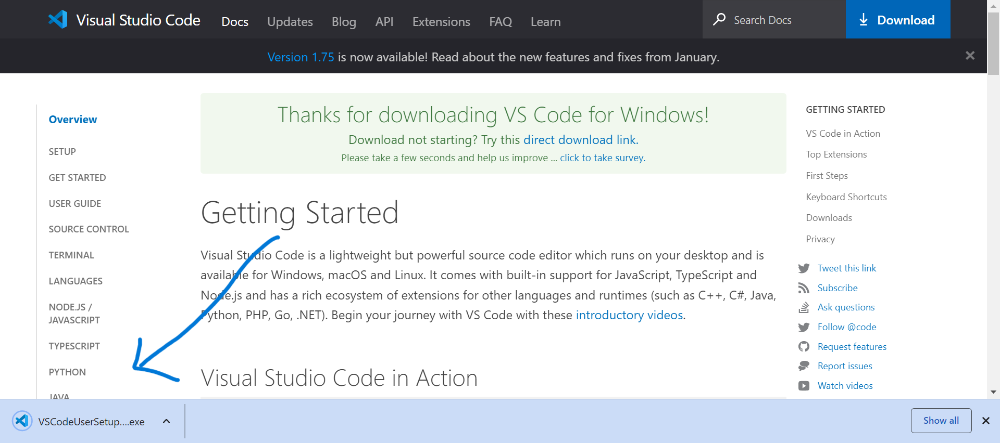
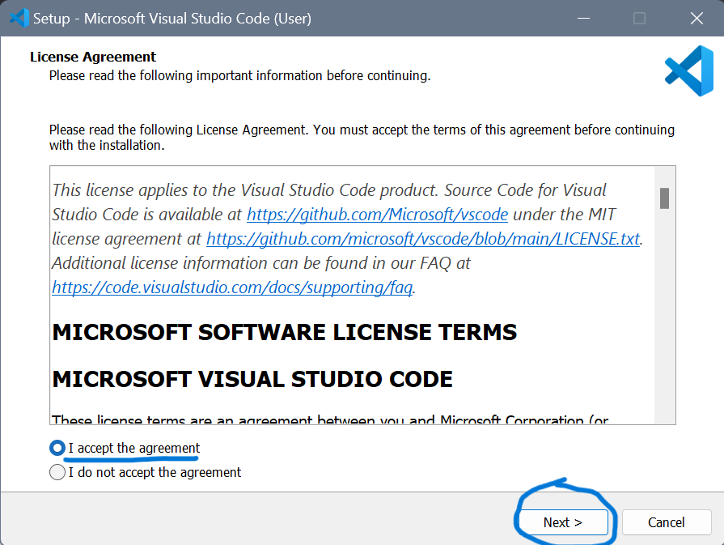
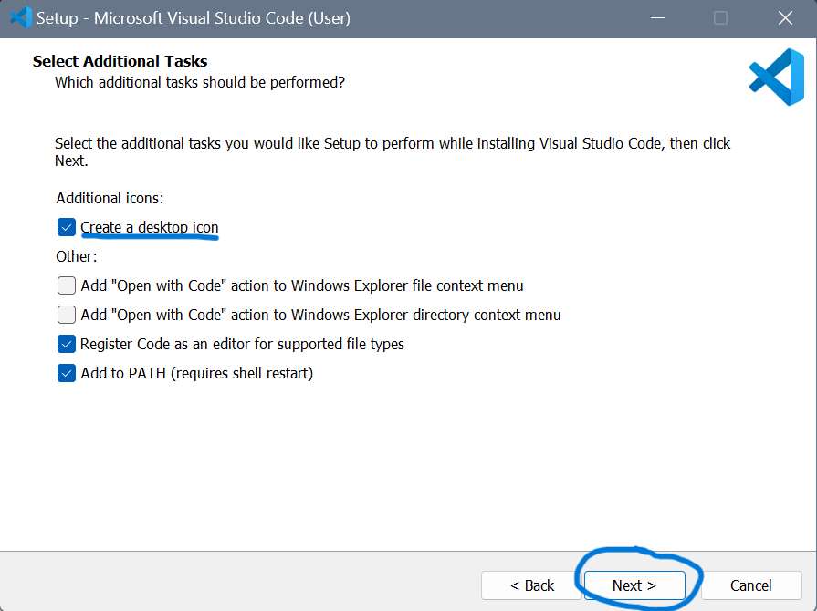
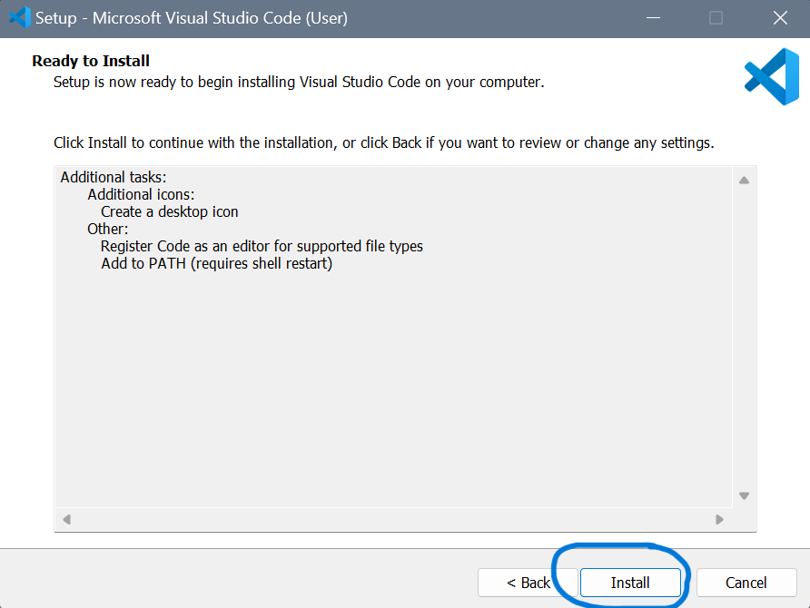
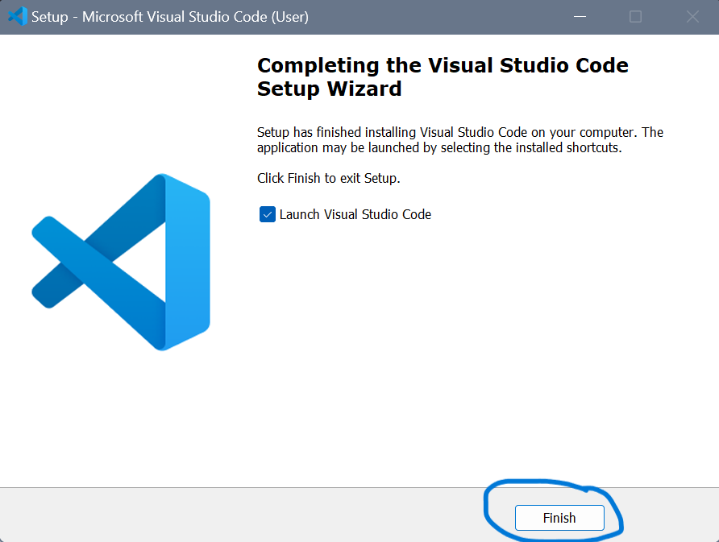

Installing Visual Studio Code
By Tony 6.8.2024
To code a website, we need a code editor, so you can code on it.
Most people use Microsoft's Visual Studio Code (VS Code) as thier code editor, but you can also use Replit, Sublime Text, TextEdit, or even Notepad. But because of its efficiency, power, and ease of use, VS Code is recomended for code editing.

To install VS Code, click on their official website and coose the version that maches your operating system, then download it and follow the steps bellow:
1. Click the downloaded file at the bottom-left corner.

2. Select "I accept" and click "Next".

3. Select "Create a desktop icon", and click "Next".

4. Click "Install".

5. Click "Finish" and VS Code should launch!

If it doesn't launch, go check if there is a VS Code icon on your desktop. If you have any problem, fell free to search online for other VS Code installing tutorials!